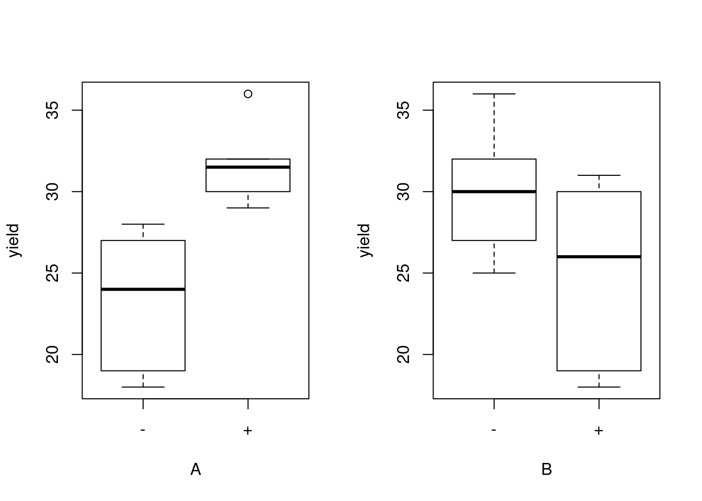
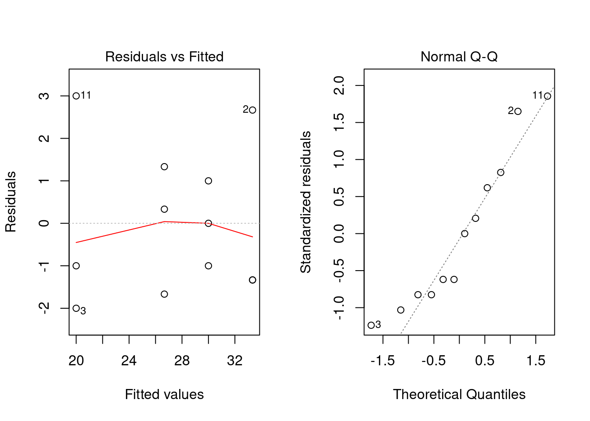
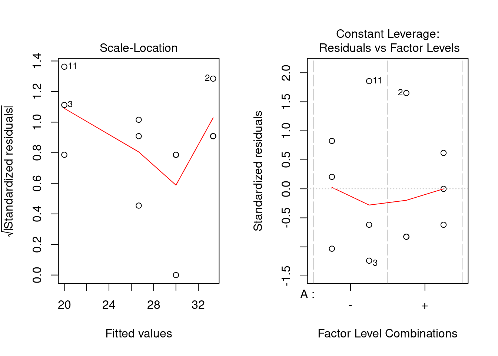
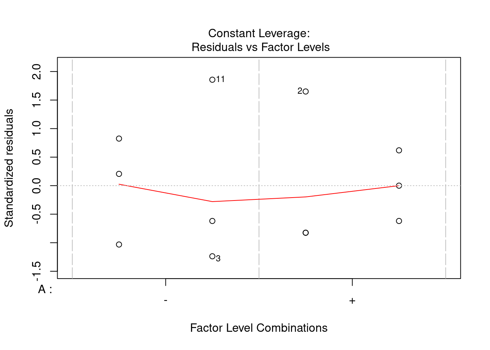
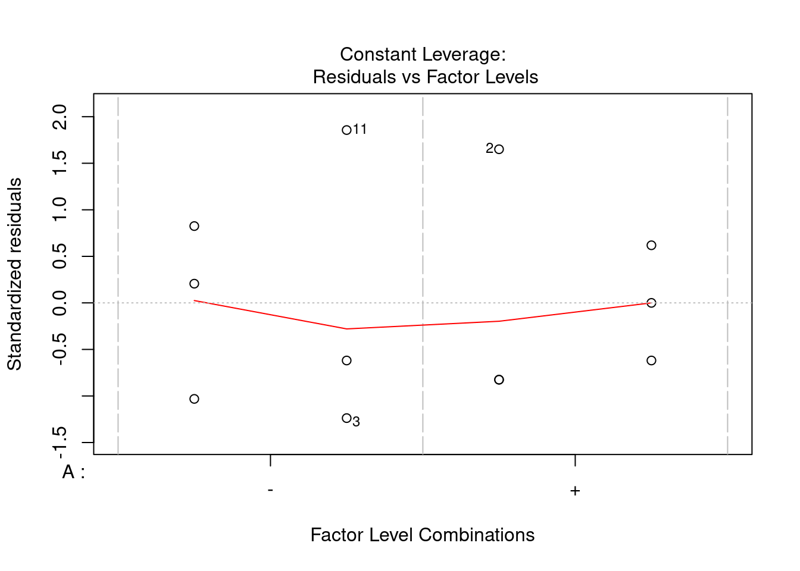

- Introduction
- I FRAMEWORK
- 1 DFSS - Design for Six Sigma
- 2 Statistics
- 3 R and Data Science
- II CASE STUDIES
- 4 DOE - Design of Experiments
- 4.1 Simple comparative experiments
- 4.2 Single factor designs
- 4.2.1 Plasma etching example
- 4.2.2 Analysis of variance
- 4.2.3 Single factor Anova, fixed effects model
- 4.2.4 Model adequacy check
- 4.2.5 Residuals normality check & outliers
- 4.2.6 Plot of residuals in time sequence
- 4.2.7 Plot of residuals versus fitted values
- 4.2.8 Equality of variances test (Barlett’s test)
- 4.2.9 Tuckey’s pairwise comparison test
- 4.2.10 Fisher’s LSD - pairwise comparison test
- 4.2.11 Practical interpretation of results
- 4.2.12 Linear model
- 4.2.13 Linear model plot
- 4.2.14 Predicting new values
- 4.2.15 R², coefficient of determination
- 4.2.16 Sample size calculation
- 4.3 two-factors ANOVA, fixed effects model
- 4.4 General factorial design
- 4.5 The 2^k factorial designs
- 4.6 The 2^2 Factorial Design
- 4.7 The 2^3 Factorial Design
- 4.8 The general 2^k design
- 4.9 Single replicate 2^k design
- 4.10 Two level fractional factorial designs
- 5 MSA - Measurement System Analysis
- 6 SPC - Statistical Process Control
- III TOOLBOX
- 7 R Packages
- About the authors
- References
4.6 The 2^2 Factorial Design
6.2
Slides with R code on Montgomery book can be found under: https://www.stat.ncsu.edu/people/bloomfield/courses/st516/
4.6.1 The Chemical Process example
chm <- read.csv(sep = ";", header = TRUE,
paste0(working_folder, "6 chemical.csv"))
# Converting into a narrow table with a factor for utilisation with ggplot2
# syntax: gather(data,
# name of the new key column (where the columns names go to),
# name of the new value column (where the values go),
# name of the columns to be gathered)
chmn <- chm %>% # "chm narrow dataframe"
gather(replicate, yield, I, II, III)4.6.2 Anova
chmn_lm <- lm(yield ~ A + B + A:B, data = chmn)
chmn_aov <- aov(chmn_lm)
summary(chmn_aov)## Df Sum Sq Mean Sq F value Pr(>F)
## A 1 208.33 208.33 53.191 8.44e-05 ***
## B 1 75.00 75.00 19.149 0.00236 **
## A:B 1 8.33 8.33 2.128 0.18278
## Residuals 8 31.33 3.92
## ---
## Signif. codes: 0 '***' 0.001 '**' 0.01 '*' 0.05 '.' 0.1 ' ' 1par(mfrow = c(1, 2))
plot(yield ~ A * B, chmn)
plot(chmn_lm)
par(mfrow = c(1, 1))
with(chmn, interaction.plot(A, B, yield))
plot(chmn_aov) # the usual suspects

 

4.6.3 Regression model / Prediction
Effects Fit the regression equation, with versions of the factors, coded as numeric!, −1 for low levels, and +1 for high levels.
coded <- function(x) {
ifelse(x == x[1], -1, 1)
}
chmn2 <- within(chmn, {cA = coded(A); cB = coded(B)})
chmn2 <- select(chmn2, A, B, replicate, yield, cA, cB)
chmn2_lm <- lm(yield ~ cA * cB, data = chmn2)
summary(chmn2_lm)##
## Call:
## lm(formula = yield ~ cA * cB, data = chmn2)
##
## Residuals:
## Min 1Q Median 3Q Max
## -2.000 -1.333 -0.500 1.083 3.000
##
## Coefficients:
## Estimate Std. Error t value Pr(>|t|)
## (Intercept) 27.5000 0.5713 48.135 3.84e-11 ***
## cA 4.1667 0.5713 7.293 8.44e-05 ***
## cB -2.5000 0.5713 -4.376 0.00236 **
## cA:cB 0.8333 0.5713 1.459 0.18278
## ---
## Signif. codes: 0 '***' 0.001 '**' 0.01 '*' 0.05 '.' 0.1 ' ' 1
##
## Residual standard error: 1.979 on 8 degrees of freedom
## Multiple R-squared: 0.903, Adjusted R-squared: 0.8666
## F-statistic: 24.82 on 3 and 8 DF, p-value: 0.0002093# Predict new values
chmn_new <- data.frame(cA = 1, cB = 1)
predict(chmn2_lm, newdata = chmn_new)## 1
## 30# Compare with predicted table below (the same values are found!)
chmn2_tidy <- augment(chmn2_lm)A coefficient in a regression equation is the change in the response when the corresponding variable changes by +1.
As A or B changes from its low level to its high level, the coded variable changes by 1 − (−1) = +2, so the change in the response is twice the regression coefficient. So the effects and interaction(s) are twice the values in the “Estimate” column. –> These regression coefficients are often called effects and interactions, even though they differ from the definitions given earlier.
4.6.4 Response surface
(still to be implemented)
ngrid <- 20
Agrid <- Bgrid <- seq(from = -1, to = 1, length = ngrid)
yhat <- predict(chmn_lm, expand.grid(cA = Agrid, cB = Bgrid))
yhat <- matrix(yhat, length(Agrid), length(Bgrid))
persp(Agrid, Bgrid, yhat, theta = -40, phi = 30)
# in real values:
persp(20 + 5 * Agrid, 1.5 + 0.5 * Bgrid, yhat, theta = -40, phi = 30,
ticktype = "d", xlab = "Reactant Concentration", ylab = "Catalyst")